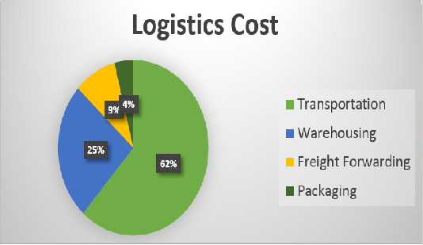

Unternehmen
Budecon – Business Advisory s.r.o., Prag ist Ihr zuverlässiger und spezialisierter Berater im Bereich Business Development, Outsourcing und Projektrealisierungen für Unternehmen sowie Start-Ups aus den Bereichen IT, Dienstleistungen, Finanzen und Einzelhandel in Zentraleuropa.
Gemeinsam mit unseren Partnern unterstützen und beraten wir Sie in allen Fragen zu den von Ihnen geplanten Unternehmensexpansionen, Geschäftsfelderweiterungen, Markteintritten, Projektkonzepten sowie den entsprechenden Umsetzungsstrategien. Prag, als Zentrum der Globalisierung, Digitalisierung und Industrie 4.0 in Zentraleuropa bietet hierfür eine exzellente Ausgangsbasis und Vernetzung.
Beratungsthemen
Projektrealisierung
Setzen Sie bei Ihren Projektrealisierungen in Zentraleuropa auf uns als erfahrenen und qualifizierten Partner, der Sie von Planung bis Realisierung Ihres Projekts begleitet und sicherstellt, dass alle Ihre Vorgaben und Vorstellungen hundertprozentig umgesetzt und eingehalten werden.
We've worked with
Projekte
Logistikkostenoptimierung
Durch Warehouse-Outsourcing in ein vollautomatisiertes Logistikzentrum unseres Serviceproviders in Bratislava optimieren und senken Sie Ihre Logistikkosten, bei gleichbleibenden Versandkosten, auf ein Minimum.
Die speziell entwickelte Budecon - Business Advisory s.r.o. Lösung bietet Unternehmen die Nutzung einer einzigartigen Online-CRM-Plattform (PaaS - Plattform as a Service) zur vollautomatisierten Logistikabwicklung. Mit dem gegenwärtigen Produkt sind Sie in der Lage alle Bestell-, Logistik- und Accounting-Vorgänge (auf Wunsch auch mit Endfertigung), mit integrierter Back-End-Anbindung an Ihr E-Commerce-System, aus der Ferne selbständig zu steuern und jederzeit nachzuvollziehen.

Geschäftsentwicklung WE
Budecon – Business Advisory s.r.o. plant und vollzieht den Markteintritt für das Unternehmen D1-Solution aus Bratislava in den westeuropäischen Markt und steht hierbei für eine transparente und strukturierte Planung der Geschäftsfeldentwicklung und Expansion. Zusammen mit unserem Kunden setzen wir auf eine nachhaltige Strategie zur langfristigen Etablierung in den Märkten.
Geschäftsfeldentwicklung CEE
Gehen Sie einen gemeinsamen und nachhaltigen Weg zur Etablierung Ihres Geschäfts in einem der größten Wachstumsmärkte innerhalb Europas. Speziell Anbietern im Bereich Einzelhandel bieten wir bereits vorhandene Lager- und Verkaufsflächen im Euroraum, Bratislava - Slowakei, oder gründen mit Ihnen eine eigene Niederlassung zur zielorientierten Expansion Ihres Unternehmens. Gemeinsam mit Ihnen schaffen wir nachhaltige Werte für Ihr Unternehmen.
Accounting Outsourcing
Verlagern Sie den Schwerpunkt Ihrer unternehmerischen Tätigkeit innerhalb der Eurozone und optimieren Sie Ihre Kostenstruktur. Profitieren Sie hierbei von unseren bestehenden Accounting Partnern und stellen Sie sich wettbewerbsfähiger auf.